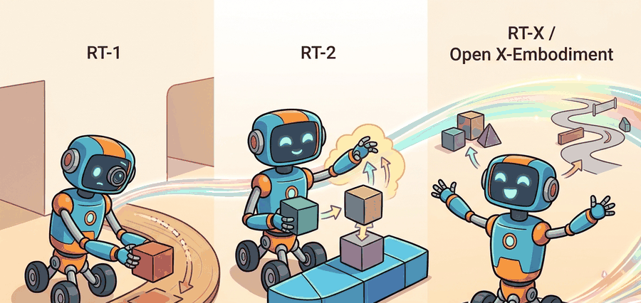

"Cross-embodiment robot policies are useful only when the dataset mixture and action conventions are visible."
A Grounded AI Agent

This section assumes familiarity with the VLM-to-VLA transition covered in section 34.1, particularly how language tokens are coupled to action tokens. The cross-embodiment data pooling introduced here is extended in section 34.3, where Octo and OpenVLA build open generalist policies on the same mixture principle, and further in section 34.4, where diffusion-based action heads replace the discrete token formulation used by RT-2.
Figure 34.2 should be read as a lineage map from single-robot imitation to web-augmented and multi-robot training. The check is whether each dataset contributes compatible observations, actions, and task labels.
Build And Evaluation Checklist
What changed at each step. RT-1 collected 130,000 real episodes on a fleet of Everyday Robot arms performing 700-plus kitchen and tabletop tasks, then trained a 35M-parameter EfficientNet-FiLM encoder paired with a TokenLearner and a causal transformer to output 7 discrete end-effector tokens per step. The key constraint was that every episode came from one gripper morphology at one control rate. RT-2 replaced the dedicated encoder with a pretrained PaLI-X or PaLM-E backbone and co-trained on web image-text pairs alongside the same robot demonstrations, which allowed the 55B-parameter variant to follow novel semantic instructions (such as "pick up the object that could clean a surface") that never appeared in the robot dataset. RT-X then pooled data from 22 robot types across 21 institutions, forcing the action normalization problem into the open: a Universal Robots UR5 arm at 15 Hz and a Google Robot arm at 3 Hz must both emit tokens in the same 256-bin scheme after per-embodiment z-scoring or the shared policy trains on contradictory signals.
How to compare results across the lineage without fooling yourself. A valid lineage comparison locks robot hardware, task family, evaluation split, and action convention in a single artifact before running any model. RT-1 vs RT-2 comparisons are only meaningful on the same Everyday Robot arm with the same 700 tasks and the same held-out test episodes. RT-X improvement claims (roughly 50% task-success gain over single-robot RT-1 on unseen manipulation tasks) are valid only for the specific hardware and task families reported in the Open X-Embodiment paper. Mixing results from a Franka Panda arm into a table that was computed on an Everyday Robot arm inflates or deflates transfer numbers without the reader knowing which direction.
Before accepting a cross-embodiment transfer claim, verify four things: which robot morphology generated the test episodes, what control frequency was used during normalization, whether the action convention (end-effector delta vs. joint position) is consistent across the rows being compared, and whether the LeRobot or Open X dataset metadata fields (control_frequency_hz, action_space, robot_type) are present and validated in the evaluation artifact.
Write an evidence row for a lineage comparison using one RT-1 task and one RT-X task from the Open X-Embodiment paper. Your row must include: source dataset name, robot model and gripper type, action space dimension, control frequency in Hz, camera configuration (wrist vs. overhead), held-out task description, and whether the test episodes were recorded on the same physical robot or a different unit. Identify which fields, if missing, would make the comparison invalid.
# Inspect the fields expected by a VLA dataset before training.
required_fields = ["observation.image", "observation.state", "action", "language_instruction"]
def validate_vla_contract(fields: list[str]) -> str:
missing_prefix = [field for field in fields if "." not in field and field != "action" and field != "language_instruction"]
assert not missing_prefix
return ", ".join(fields)
print("VLA dataset contract:", validate_vla_contract(required_fields))Use LeRobot or an OpenVLA-style repository before writing a custom robot dataset loader. The maintained stack handles episode schemas, image loading, action normalization, and train-eval splits that otherwise take hundreds of lines to rebuild.
A single Everyday Robot arm, trained only on its own kitchen demonstrations, fails completely the moment you hand it a different gripper or mount it on a mobile base. The RT-1, RT-2, RT-X lineage is the story of breaking that wall.
Each step answered one urgent question: can scale alone beat hand-coded skills (RT-1), can web-pretrained vision-language models make a robot understand novel commands it has never seen (RT-2), and can pooling data from 22 robot types actually transfer anything (RT-X / Open X-Embodiment)? By the end of this section you will be able to trace exactly where each system pushed the boundary, identify the dataset contract that makes cross-embodiment pooling valid, and spot the failure modes that invalidate headline numbers.
From One Robot Fleet To Cross-Embodiment Data
RT-1 showed that a transformer policy could learn many manipulation tasks from a large collection of real robot demonstrations. Its important design choice was not only scale. It represented low-level robot actions as discrete tokens, which let the model use sequence modeling machinery for physical control.
Consider a specific case: RT-1 controls a robot arm with a 7-dimensional end-effector command (x, y, z position, roll, pitch, yaw, and gripper open/close). Each continuous dimension is discretized into 256 bins, producing 7 tokens per timestep. A command meaning "move 3 cm left, close gripper" becomes a token sequence such as [128, 115, 128, 128, 128, 128, 0], where 128 encodes no change along an axis and 0 encodes a fully closed gripper. The transformer predicts these 7 tokens autoregressively, treating robot control as a language modeling problem over a small fixed vocabulary.
RT-2 moved the idea closer to a VLA foundation model. It used Internet-scale vision-language backbones and co-trained them so that robot actions could be emitted as token sequences. This is called actions as language tokens, and it is what lets the model share gradients between "what is a ripe banana?" and "how far should I open the gripper?" This made web knowledge useful for some semantic generalization, such as recognizing objects or interpreting instructions, while still depending on robot data for physical grounding.
RT-2 takes a pretrained VLM (such as PaLI-X or PaLM-E) whose output vocabulary covers natural language. Robot actions are represented as text tokens: the value "0.032" for a gripper dimension becomes the string token "0.032" in the model's existing vocabulary, or the bin index is mapped to a reserved token. During co-training, robot demonstration episodes and web image-text pairs are interleaved in the same batch. The model sees a robot image plus an instruction and must predict either a natural language response or an action token sequence, depending on the example type. This shared gradient signal is why the model can say "that is a ripe banana" (web knowledge) and also predict the wrist angle needed to grasp it (robot data), without maintaining two separate model weights.
RT-1 scaled robot demonstrations, RT-2 fused web semantics with robot actions, and RT-X asked whether pooled data from many embodiments could improve transfer across robots.
What RT-X Changed
Open X-Embodiment made the dataset question impossible to ignore. Instead of treating every robot as a separate island, it standardized data from many institutions and trained RT-X variants across a shared mixture. The result was not universal robot intelligence. The result was a clear empirical lesson: carefully pooled robot data can produce positive transfer when the action and observation interfaces are normalized enough to learn from. In the Open X-Embodiment evaluation, RT-X trained on the 22-robot mixture improved task success on unseen manipulation tasks by roughly 50 percent compared to single-robot RT-1 baselines on the same hardware, despite the model having never seen those exact tasks in isolation: pooling 22 robots outperformed training on one.
Cross-embodiment learning needs a common language for action. A 7-dimensional end-effector command can represent position, orientation, and gripper state for one arm, but missing dimensions, different control rates, and different grippers must be handled explicitly. Otherwise the model sees a data mixture whose symbols do not mean the same thing.
Algorithm: Cross-Embodiment Dataset Ingestion for RT-X
Input: A set of robot datasets $\mathcal{D} = \{D_1, D_2, \ldots, D_K\}$ from $K$ embodiments, each with raw observations $o_t$, actions $a_t$, and metadata $m$ (control frequency $f_{\text{hz}}$, action dimension $d$, gripper convention)
Output: A normalized mixture dataset $\mathcal{D}^*$ with a shared observation-action interface ready for joint policy training
- For each source dataset $D_k$, verify required fields:
observation.image,observation.state,action,language_instruction, andcontrol_frequency_hz. Reject any episode missing a required field. - Align control frequencies: resample all episodes to a shared target rate $f^*$ (typically 3 Hz or 10 Hz) by selecting the nearest recorded timestep, so that action delta magnitudes are comparable across embodiments.
- Pad or mask action dimensions to a shared width $d^*$. For embodiment $k$ with $d_k < d^*$ dimensions, set missing entries to a designated no-op token (zero delta); record a binary validity mask $v \in \{0,1\}^{d^*}$ per step so the policy does not learn from padded dimensions.
- Normalize each action dimension $j$ across embodiment $k$: compute the per-dimension mean $\mu_{k,j}$ and standard deviation $\sigma_{k,j}$ over the training split, then set $\hat{a}_{t,j} = (a_{t,j} - \mu_{k,j}) / \sigma_{k,j}$. Flag any dimension where $|\hat{a}_{t,j}| > 3$ as a likely metadata error (frequency mismatch or unit error).
- Discretize each normalized continuous action value into $B = 256$ uniform bins to produce integer action tokens $\tau_j \in \{0, 1, \ldots, 255\}$, where bin 128 encodes zero delta (no change).
- Assign each episode a dataset-weight $w_k$ reflecting the desired mixture ratio. Compute the mixture probability $p_k = w_k / \sum_{k'} w_{k'}$ and sample episodes accordingly during training.
- Construct the policy input sequence for each timestep: $x_t = [\text{image tokens}; \text{language tokens}; \text{state tokens}]$ and target output $y_t = [\tau_{t,1}, \ldots, \tau_{t,d^*}]$. Append the embodiment identifier as a special token $e_k$ prepended to $x_t$ so the model $\pi_\theta$ can condition on embodiment. Without this token, a UR5 arm and a Spot quadruped share the same action space in the model's view, so the policy cannot distinguish which output dimensions are valid for the current robot, producing unsafe or incoherent commands on hardware that cannot execute them.
- The embodiment token works by giving the transformer a learnable embedding for each robot type. At inference time the embedding shifts the model's internal representation toward the action distribution seen for that robot during training, analogous to a task or domain prefix. The model learns that token $e_k$ co-occurs with certain action ranges, control rates, and valid dimension masks, so the attention mechanism routes predictions through weights tuned for that embodiment rather than averaging across all robots in the mixture.
- Train the policy $\pi_\theta$ by minimizing cross-entropy loss over action tokens: $\mathcal{L}(\theta) = -\sum_t \sum_j v_{t,j} \log \pi_\theta(\tau_{t,j} \mid x_t)$, summing only over valid (non-padded) dimensions via the mask $v$.
- After training, inspect per-embodiment success rates on held-out episodes. If robot $k$ regresses relative to a single-embodiment baseline, audit its $\mu_{k,j}$, $\sigma_{k,j}$, and $f_{\text{hz}}$ values before adjusting $w_k$.
When adding a new robot to an Open X-style mixture, set the control_frequency_hz metadata field before any model work: the LeRobot dataset schema stores this per-episode, and a mismatch between the recorded frequency and the field value silently corrupts action delta magnitudes during normalization. Use lerobot.common.datasets.utils.compute_stats to inspect per-dimension action mean and standard deviation after ingestion; values outside the range [-3, 3] after z-scoring are almost always a frequency or unit mismatch, not a policy failure. Fix the metadata first, recompute stats, and retrain rather than adjusting the action head to compensate.
The lineage also exposes an evaluation trap. If RT-X improves one robot because another robot contributed useful examples, the comparison must be co-computed on the same task family and split. A table that mixes results from different robots, different seeds, or different episode filters can look stronger than the evidence supports.
Suppose a lab adds a new gripper to an Open X-style mixture. The first engineering step is not model training. It is metadata alignment: camera calibration, action scale, control frequency, gripper convention, language labels, and train-test splits. The model can only generalize across embodiments if the data tells it what each embodiment means.
What To Remember For Modern VLAs
Modern systems such as Octo, OpenVLA, SmolVLA, pi-zero, GR00T, and Gemini Robotics all inherit the lineage question: how much of the policy comes from robot data, how much comes from web-scale perception and language, and how much comes from the chosen action head? RT-1, RT-2, and RT-X are not historical footnotes. They define the axes that current systems still vary.
A model can know the word "spatula" from the web and still fail to slide a real spatula under a pancake. Web pretraining helps with semantics, but contact, friction, reachability, compliance, and recovery still come from embodied data and control design.
Students often assume that pooling data from more robot types automatically improves policy performance for every target robot. This is wrong in the embodied AI context because action tokens from a UR5 arm at 15 Hz and from a mobile manipulator at 3 Hz encode fundamentally different physical magnitudes: without per-embodiment frequency alignment, z-score normalization, and a validity mask over padded dimensions, the shared policy trains on contradictory signals and can produce unsafe commands on hardware that cannot execute them. The correct mental model is that cross-embodiment transfer is gated by metadata quality and normalization correctness, not by raw dataset size: adding a new robot to the mixture first requires verifying control frequency, action space convention, and gripper type, and auditing per-dimension statistics before any training run.
Read the lineage as a sequence of interface decisions: what changed in the data mixture, what changed in the action head, and what changed in transfer across robots.
Explain the difference between RT-1, RT-2, and RT-X without using the word "bigger." Your answer should mention robot demonstrations, web knowledge, and cross-embodiment data.
The open question is not whether more robot data helps. It does. The harder question is which data should be mixed, how it should be weighted, and when a heterogeneous mixture hurts a target robot by teaching incompatible habits.
The RT lineage teaches the central VLA tradeoff: semantic generalization wants broad pretraining, while motor reliability wants clean, embodiment-aware robot data.
Design a cross-embodiment data table for two robot arms with different grippers. Include fields for action dimension, control rate, camera views, gripper convention, and missing dimensions.
What's Next?
Section 34.3 turns from the Google lineage to open generalist policies that readers can inspect and adapt.
Brohan et al. (2022). "RT-1: Robotics Transformer for Real-World Control at Scale." arXiv.
RT-1 showed that a transformer policy trained on large real robot data could produce discretized low-level robot actions from images and instructions. It is the starting point for the chapter lineage and useful for readers who want the engineering details behind large-scale robot data collection.
RT-2 made the action-as-language move explicit by fine-tuning VLM backbones to emit robot actions as tokens. Researchers should read it for the co-training setup, while practitioners should read it for the limits of transferring web semantics into motor control.
This paper introduced the cross-institution robot data mixture and RT-X models. It is essential for understanding why embodiment metadata, action normalization, and dataset mixture design matter.
Octo Model Team et al. (2024). "Octo: An Open-Source Generalist Robot Policy." arXiv.
Octo is a transformer-based diffusion policy pretrained on Open X-Embodiment trajectories and designed for flexible fine-tuning. It is the clearest open reference for generalist policy initialization before the Internet-pretrained VLA wave.
Kim et al. (2024). "OpenVLA: An Open-Source Vision-Language-Action Model." arXiv.
OpenVLA connects open VLM backbones to robot action generation and provides a practical codebase for fine-tuning. Practitioners should read it alongside the GitHub repository before adapting an open VLA to a new robot.
Hugging Face. "LeRobot." GitHub.
LeRobot is the practical open-source toolkit used here for datasets, policy training, evaluation, and low-cost robot workflows. Engineers should start here before writing custom data loaders or training loops.